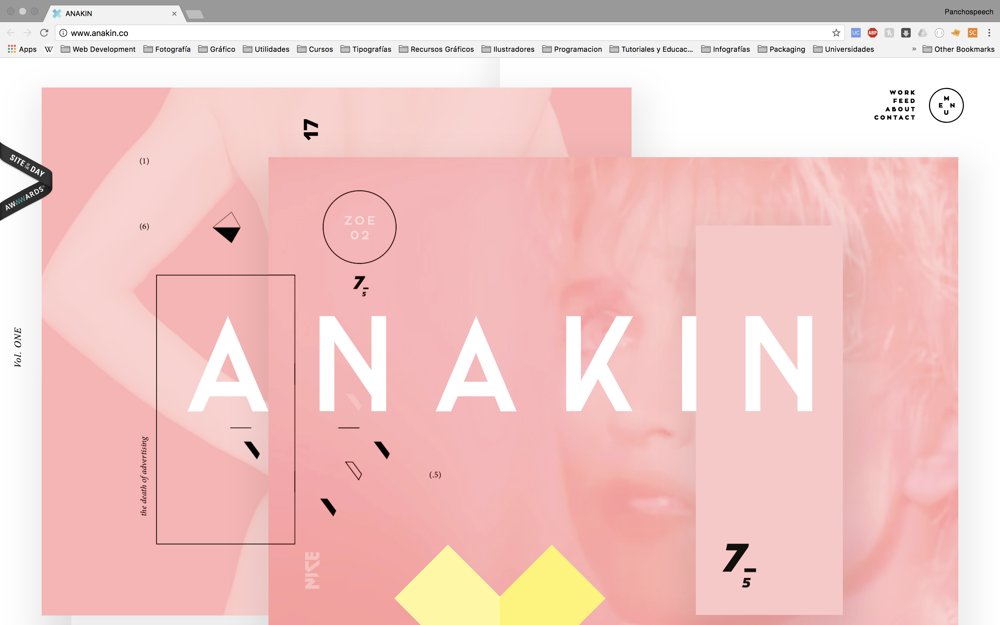

Para presentar y difundir mi trabajo académico y personal para el potencial contacto con clientes o empresas que soliciten asistencia o asesoramiento en el área de diseño y comunicaciones.
Anakin Studios: Estudio de diseño ubicado en Bavaria que se especializa en la fabricación digital de artesanía, su gráfica llamativa pero minimalista atrae la atención con sus colores y juegos tipográficos
Portafolio de Mathias Sterner:Portafolio Web de este fotógrafo y director de Estocolmo. La simpleza y claridad en entregar lo necesario convierte en esta página en una pieza fotográfica en sí.
Portafolio de Erminando Aliaj: Portafolio Web de este fotógrafo. Llama la atención el dinamismo que se genera en cada transición, la diagramación y categorización de los elementos es clave para la generación de una experiencia de navegación única. No requiere de scrolldown para llegar a los contenidos.
Mallory Gianola
Director Regente Oficina de Comunicaciones Fundación Smithsonian
Sketch and Name: Mallory Gianola, 38 años, Director regente de la oficina de comunicaciones de la Fundación Smithsonian. Estudios en administración y marketing en la Universidad West Virginia. Se ha desempeñado en cargos de coordinación, asistencia y dirección en sitios de promoción de cultura. Casada con un empresario que trabaja en la Bolsa de Washington, 2 hijos.
Behavioral demographic information: Situación acomodada, con un sueldo de 1.5m de pesos mensuales, nivel socioeconómico ABC1, posee al menos una propiedad en Washington con la hipoteca pagada.
Experience goals, End goals, Life goals: En la interacción con la página web, este personaje quiere que el flujo de la página sea intuitivo, no quiere perder tiempo en encontrar lo que busca: muestra de trabajos y experiencia laboral. A lo largo de su vida ha ingresado a muchos sitios web buscando inspiración, por lo tanto quiere sorprenderse de buena manera en términos gráficos y comunicativos, de manera tal que no sea una página más en su historial y algo quede resonando en su interior. De esta manera puede asociar la experiencia puesta en el portafolio para su propio trabajo o de algún proyecto que tenga en mente. En cada proyecto ella buscará rápidamente la categoría y el trasfondo de éste en una lectura rápida pero que permita también la profundización.
Potential Solutions: Intuitivo, bilingüe, minimalista pero con guiño cultural diferenciador (sacar provecho a origen chileno), ordenado y categorizado. Textos breves y concisos a modo resumen, pero con posibilidad de profundizar en una nueva página.
Federico Castillo
Ingeniero Comercial de la Universidad de Chile
Sketch and name: Federico Castillo, 28 años, Ingeniero Comercial de la Universidad de Chile, con proyecciones en generar un emprendimiento en el ámbito alimenticio. Soltero y sin hijos, aún vive en la casa de su madre.
Behavioral demographic information:
Clase media acomodada (C1a), Trabaja en el Banco de Chile, pero no le gusta su trabajo, su sueldo es de 700 mil pesos mensuales.
Experience goals, End goals, Life goals: En la página web busca que sea “linda, simple y novedosa” pero que se muestre el contenido principal con una jerarquía muy marcada. Necesita que se facilite lo más posible el contacto con el encargado y que se conecte directamente con el mail o teléfono. Él valora la experiencia de la persona, su casa de estudio y la muestra de su trabajo. (Necesita ver para creer) Lo revisará posiblemente en su teléfono y debe permitir por esto una correcta visualización. Para su marca busca algo llamativo y comunicativo, no quiere caer en los clichés.
Potential solutions: Diferente en términos de tipografía y colores, intuitivo y ordenado, formularios de contacto directo en la página. Importancia de diseño responsive. Dar importancia a la experiencia con buenas fotografías de los trabajos realizados. Textos cortos y precisos para explicar los proyectos.
Laura Esquivel
Directora de Comunicaciones Revista i-D en español
Sketch and name: Laura Esquivel, 33 años, periodista de la Universidad de Valencia, ha trabajado en diarios locales y nacionales en España y ahora se desempeña como directora de comunicaciones y contenidos de la revista i-D.
Behavioral demographic information: Clase alta (AB), Trabaja en la revista porque ama lo que hace, pero no le pagan tanto como le gustaría. Gran parte de su sueldo (700 mil pesos mensuales) lo gasta en el arriendo de un departamento pequeño, pero bien ubicado en Barcelona. Tiene un gato y prefiere moverse en bici por la ciudad.
Experience goals, End goals, Life goals: “Simple pero con identidad” es su lema, la simpleza la busca en la manera en que la página esta ordenada en su totalidad, de manera tal que valora la separación de los contenidos y la categorización. Debido a su conocimiento en comunicaciones sabe la importancia de la web en la difusión de contenidos, y la línea editorial es clave para que el concepto completo de la página sea coherente y cohesionado. La identidad lo busca en pequeños guiños que hacen diferente esta página con el resto, estos guiños se pueden tratar de juegos tipográficos, de escala o cromáticos que den una nueva capa de significado al profundizar en cada elemento. Más que la experiencia y trabajos, Laura busca que la página comunique una idea sólida.
Potential solutions: Definición de un concepto gráfico para portafolio que englobe las decisiones tipográficas, cromáticas, diagramación. Disruptivo y nuevo pero con una estructura reconocible con categorización de los contenidos.